Raft算法
1. 介绍
在分布式系统中，为了提高系统的可用性，通常会使用副本进行容错，但这也带来了额外的问题，如何保证多个副本之间的数据一致性？这便需要引入分布式一致性算法进行协调。
过去的分布式一致性算法往往采用 Paxos 算法，但 Paxos 难以理解和实现，例如 Google 使用 Paxos 实现分布式锁 Chubby 时也踩坑无数。幸运的是，斯坦福的 Diego Ongaro 和 John Ousterhout 在其博士论文中提出了 Raft 协议，称其为易理解的分布式共识算法，极大程度上推动了分布式一致性算法的工程应用，Raft 是现在分布式系统首选的共识算法。
吐槽：事实证明，Raft 总体思路简单，但具体细节仍然很不容易理解。
Raft 通过一切以 leader 为准的方式，实现数据和日志同步，并在 leader 节点宕机或者网络超时后进行选举。Raft 是强一致性的协议，常用在分布式锁、分布式存储等领域。
强一致性指所有节点在任一时刻的状态完全一致，即系统对外表示为只有一个数据副本。
一致性的分类和取舍需要根据实际场景进行选择，较为复杂，不在本文的讨论范围内。
Raft 可分为以下子问题：
- 选举：Raft 采用主从模式，所以第一个工作便是选举出一个 leader；
- 日志复制：leader 接收客户端的请求后，需要同步给大多数节点才能对客户端进行响应；
- 安全：在选举和日志复制时进行一些限制，保证集群强一致性；
- 成员变更
2. 选举
2.1 基础概念
在介绍 Raft 的选举过程前，需要补充一些选举的基础概念。
2.1.1 节点状态
节点有 3 种状态，并且任何时候都处于其中的 1 种：
- leader：领导者，集群中必须存在唯一一个 leader，负责处理客户端的所有请求和同步日志给其他节点；
- follower：跟随者，不会发送请求，只会响应 leader 和 candidate 的请求；
- candidate：参选者，选举新 leader 时的临时角色，如果得到超过半数的投票，则会晋升为 leader。
Raft 算法中的选举和日志复制采用大多数原则，即至少需要得到超过半数节点的认可才能成功。通常要求集群中的节点个数为奇数（Raft 不要求），例如集群共有 9 个节点，则选举和客户端操作都至少需要得到其他 4 个节点的认同（默认认同自己）。
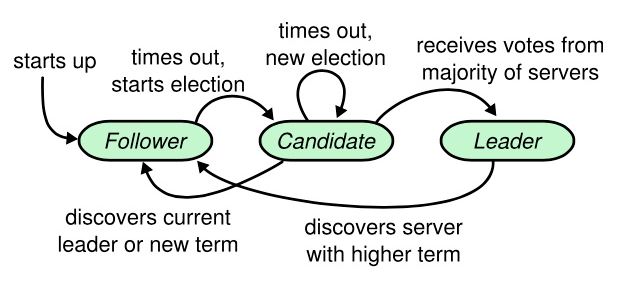
2.1.2 节点通信
服务器节点之间通过 RPC（Remote Procedure Call，远程过程调用）进行通信，有以下两种类型：
- RequestVote RPC：请求投票，用于选举 leader；
- AppendEntries RPC：附加条目，用于日志复制和心跳探测。
2.1.3 任期
每开始一次新的选举，被称为一个任期 term，与一个递增的整数关联。
term 可以看成一个逻辑时钟，在每次通信中都会携带，有以下规则：
- follower 推举自己为 candidate 时，会增加自己的 term，例如当前任期为 0，推举自己时会增加为 1；
- 如果 follower 发现自己的 term 比其他节点小时，会更新自己的 term。例如节点 A 的 term 为 0，收到一个 term 为 1 的 candidate 节点的投票请求，则 A 会更新自己的 term 为 1。
- 如果 candidate 或 leader 发现自己的 term 过期，则会转为 follower。
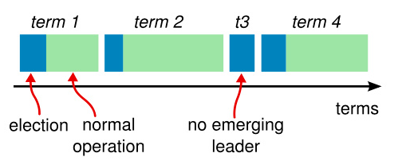
2.2 选举规则
选举通过心跳机制来触发，leader 需要周期性的向所有 follower 发送心跳消息。当 follower 在一个超时时间内没有收到心跳消息，会认为当前任期没有可用的 leader，将增加自己的任期，并转换为 candidate。
candidate 会并行的向所有节点发送投票请求，对于每个任期，每个节点根据先来先到的原则投一个票，candidate 节点有以下三种结果：
- 自己成为 leader：当获得半数以上的投票后，该节点成为 leader，并发送心跳信息阻止其他 leader 产生。要求半数以上的规则确保最多只有一个 candidate 赢得选举。
- 其他节点成为 leader：candidate 收到其他节点声明它是 leader 的消息，如果该 leader 的任期不小于 candidate 的任期，则承认 leader 的合法性；
- 没有节点成为 leader：选票被瓜分导致没有 candidate 获得半数以上投票。各 candidate 将在竞选超时后，增加任期并重新选举。

为了减少重新选举的情况发生，对以下两个超时时间进行随机选取（通常在 150-300 ms 区间范围内）：
- 心跳超时时间：使大部分情况下只有一个节点会超时转化为 candidate，赢得选举成为 leader，在其他节点超时前发送心跳包；
- 选举超时时间：每一个 candidate 在开始一次选举的时会重置一个随机的超时时间，减少选票被瓜分的可能性。
2.3 选举示例
介绍完选举规则后，下面提供选举的示例。
2.3.1 单candidate选举
下图为集群的初始阶段，所有节点都为 follower，其中 follower A 最先到达心跳超时时间， term 由 0 增加为 1，转换为 candidate，进入选举状态。

本文所有动画均来自 The Secret Lives of Data
A 向其他节点发送投票请求。

其它节点进行回复，如果 A 得到超过半数以上的投票，则立即变成 term 为 1 的 leader。

leader A 会周期性发送心跳信息给所有 follower，follower 收到心跳包则重新计时。

2.3.2 多candidate选举
如果有多个 follower 成为 candidate，并且未获得超半数的投票，那么就需要重新选举。例如下图中 B 和 D 都发起 term 为 4 的选举，且均只获得两票，需要重新进行选举。

由于设置了随机选举超时时间，下一次再选举失败的概率很低。

3. 日志复制
3.1 日志格式
副本数据是以日志的形式存在的，所有节点从同一个状态出发，经过一系列同样操作 log 的步骤，最终也必将达到一致的状态。
这便是共识算法通常采用的 Replicated State Machine 状态复制机模型。
日志由 log index 有序编号的日志条目组成。每个日志条目包含它被创建时的任期和用于状态机执行的命令。如果一个日志条目被复制到大多数服务器上，就被认为可以提交了。
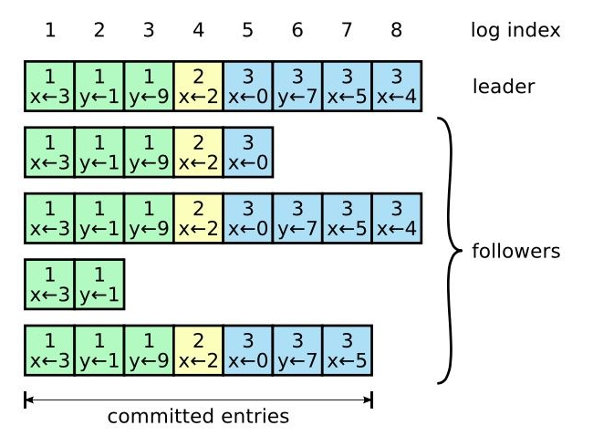
日志同步保证以下两点特性：
- 如果不同日志中的两个条目有着相同的 log index和 term，则它们所存储的命令是相同的；
这是因为在一个任期内，leader 对一个 log index 只会创建一个日志条目，并且不会进行修改。
- 如果不同日志中的两个条目有着相同的 log index 和 term，则它们之前的所有条目都是完全一样的。
进行 AppendEntries RPC 时，leader 会附加最新已经提交的日志索引信息 (term, log index)，节点收到后会进行检查，如果未能找到相同的日志条目，则拒绝添加。
3.2 日志复制流程
日志复制的流程如下图所示：
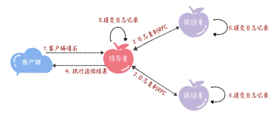
接收到客户端请求后，leader 创建一个新日志项，附加到本地日志中，此时修改未提交；

leader 将日志项复制到其他节点；

当 leader 成功复制日志项到大多数节点后，提交修改；

leader 给客户端发送响应；
当 follower 接收到心跳信息或者新的日志复制消息后，则提交修改。如果收到的是心跳消息，那么此时所有节点状态将达到一致。

3.3 日志一致性
如果所有节点正常工作，leader 和 follower 的日志总是一致，但发生节点宕机时，可能会导致日志不一致。下图阐述了日志不一致的情况：
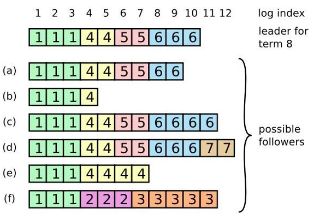
举例说明，其中 a、b 是自身宕机导致日志项落后，c、d 是由于 leader 宕机导致的。
而对于不一致问题，Raft 要求 follower 必须复制 leader 的日志，也就是说，follower 节点上任何与 leader 不一致的日志，都会被 leader 节点上的日志所覆盖。
在此处可能会有疑问，这样不会导致数据丢失吗？由于在选举上的部分限制，follower 上的已提交日志不可能超过 leader，对于外部客户端而言，系统的最新数据仍在 leader 上。具体将在 4.1 节进行介绍。
具体而言，leader 为了使 followers 的日志同自己一致，leader 需要找到 follower 日志与其一致的地方，然后覆盖 follower 在该位置后的条目。leader 会从后往前试，失败后尝试前一个日志条目，直到成功找到一致位点，然后向后逐条覆盖。
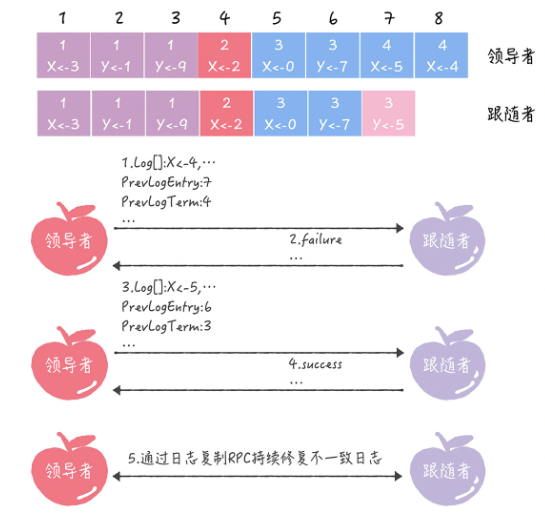
3.4 日志压缩
在实际使用中，随着日志条目的增加，节点宕机后需要经过很长时间才能恢复，影响系统的可用性。
类似 Redis ，Raft 采用快照 + 日志的方式进行存储，快照之前的日志可以丢弃。
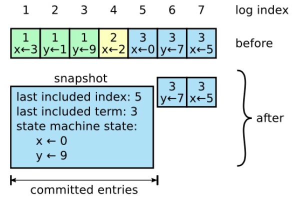
4. 安全
为了保证 leader 拥有之前任期所有已提交的日志条目，Raft 在选举和提交上都增加了限制。
4.1 选举限制
一个直观的想法是，在选举过程中，只有拥有最新已提交日志条目的 candidate 才能成为 leader。
对此，选举过程中添加了额外的判断：每个 candidate 在 RequestVote RPC 中需要携带日志信息，如果 follower 发现这个 candidate 的日志还没有自己的新，则拒绝投票给该 candidate。
那么如何比较日志的新旧呢？先判断 term， term 大的日志比较新。如果任期相同，则比较 log index，index 越大则日志越新。
candidate 想成为 leader，则至少不落后于大多数节点，而日志只有复制到大多数节点才能被提交，因此赢得竞选的 leader 一定拥有所有提交日志。
4.2 提交限制
上文提到，当 leader 得知某条日志被集群过半的节点复制成功时，就可以进行提交。然而，leader 不能任何时候都随意提交旧任期的日志，即使已经复制到大多数节点。
原论文提出如下场景：
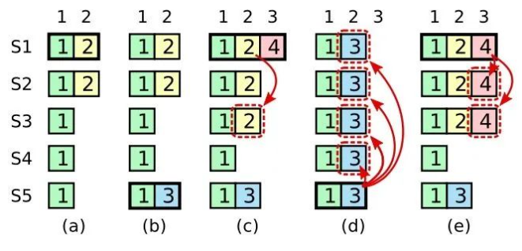
- (a)：S1 是 leader，写入日志条目为（term 2, index 2），只有 S2 复制了这个条目；
- (b)：S1 下线，S5 被选举为 term 3 的 leader。S5 写入日志条目为 (term 3，index 2）；
- (c)：S5 下线，S1 重新上线，并被选举为 term 4 的 leader。此时，term 2 的那条日志条目被复制到了集群中的大多数节点上，但是还没有被提交；
- (d)：S1 再次下线，S5 重新上线，并被重新选举为 term 3 的 leader。然后 S5 覆盖了 index 2 处的日志，发生了错误。
为了避免这种错误，leader 只允许提交当前任期的日志。对于上述场景，阶段 c 中的 S1 的 term 为 4，并且将 (term 2, index 2) 复制给了大多数节点，但不能提交，而是必须等待 term4 的日志到来并成功复制后，一并进行提交。
而到了阶段 e，(term 2, index 2) 始终被提交，因此阶段 d 中 S5 将其覆盖是安全的；或者 (term 2, index 2) 和 (term 4, index 3) 一起被提交，S5 无法当选 leader，因为大多数节点的日志 (term 4，index 4）都比它新。
5. 成员变更
5.1 成员变更的问题
日常工作中，集群中的服务器数量是会发生变化的，当服务器发生宕机或者流量激增时，需要增加或者移除集群中的服务器。
在成员变更中，Raft 原文中使用了配置 Configuration 来描述，可以简单理解为集群由哪些节点组成，例如 A、B、C 组成的集群，则配置为 [A，B，C]。
成员变更也是一个一致性问题，即所有服务器对新成员达成一致。一个简单思路是将集群关闭，并启动新集群，这个解决方案在集群变更期间服务不可用，不能应用。
如果当成普通的一致性问题，leader 生成成员变更日志，复制给大多数后，各节点提交日志从旧配置 切换到新配置 。但由于各节点提交时间点不同，导致切换到新成员配置的时间不同。问题是在某一时刻， 和 可能分别存在一个 leader，出现分布式系统中严重的脑裂问题。
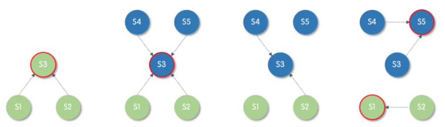
5.2 单节点变更
Raft 最初采用 Joint Consensus 联合共识解决多 leader 问题，但这个方案实现困难，后续推出了改进方案，single-server changes 单节点变更。
单节点变更，就是一次只变更一个节点，最终达成共识。比如 3 节点集群扩充为 5 节点集群，需要执行 2 次单节点变更，先变为 4 节点集群，再变为 5 节点集群。
下面将举例说明，假设一开始有 3 个节点 A、B、C， A 为 leader，则配置为 [A，B，C]。
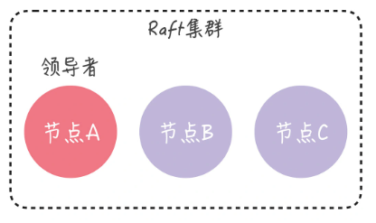
现加入节点 D，通过以下步骤实现：
- A 向 D 同步数据；
- A 将新配置 [A，B，C，D] 作为一个日志项，复制到所有节点上，提交日志后则完成单节点变更。
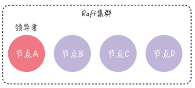
同理，继续添加节点 E。到此，集群完成了成员变更，并且始终只有一个 leader。
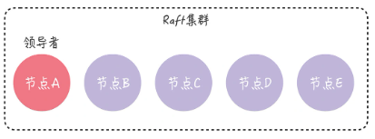
6. 总结
本文介绍了 Raft 算法的主要流程，细节部分并未深入，可以参照论文中的这张图。